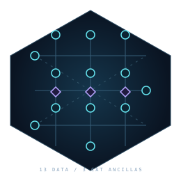

1. Create possibilities
The H gate prepares a qubit with equal chances of 0 and 1 when measured. Before measurement, amplitudes let these possibilities interfere.
01 / INTERACTIVE QUANTUM SIMULATION
Choose an example, run it, and see which answers are possible.
Everything is calculated right here in your browser.
The H gate prepares a qubit with equal chances of 0 and 1 when measured. Before measurement, amplitudes let these possibilities interfere.
In the Bell example, the two results always match: 00 or 11. Neither is predictable on its own. This correlation cannot send a message instantly.
50% means about half the results over many fresh runs, not exactly half every time. The simulator calculates the chances; it does not measure real hardware.
QUANTUM OBSERVATORY / ROTATE TO EXPLORE
Press Run circuit. Each glowing dot will show one possible answer.
How to read this: 00 means both qubits are measured as 0. A label of 50% means that answer has a one in two chance. The connecting lines are display guides, not physical links or an entanglement test.
INTERFERENCE / INTERACTIVE EXPLANATION
Quantum calculations combine amplitudes, numbers that behave like waves. When they line up, they reinforce. Shift one by half a turn and they cancel for one answer, making the other certain.
This is a separate teaching example, not your circuit result. These are amplitude waves, not moving particles.
The waves line up. The result is always 0.
P(0) 100.0% · P(1) 0.0%
A gate is an instruction. Read the steps from left to right.
Run the circuit to inspect its state.
Your state vector appears here.
A Hadamard creates a superposition. CNOT entangles the two qubits. Run the Bell pair: only 00 and 11 should appear, each at 50%.
02 / MAGIC STATE DISTILLATION
A magic state is a resource for certain quantum operations.
This model uses 15 noisy inputs to try to produce one cleaner output.
Start with imperfect resource states.
Reject an attempt when its checks detect an error.
An accepted output can still have an undetected error.
Passing a check is evidence, not a guarantee. Read the error estimates and model limits below.
Seeded sampling plus exact analytical estimates.
Rejected attempts remain in the accounting.
Run a seeded factory experiment.
Independent input Z faults and ideal Clifford operations. This model does not reproduce physical cultivation, hardware latency or noisy Clifford gates.
03 / CIRCUIT LEVEL SURFACE CULTIVATION
Simulate a small quantum preparation experiment.
13 qubits hold the state. Three helper qubits assist with checks.

Build the candidate state on 13 data qubits.
Use three helper qubits in two verification rounds.
Report acceptance and how close retained states are to the target.
Passing a check is evidence, not a guarantee. Read the error estimates and model limits below.
Small batches keep the browser responsive.
Simulated trajectories, not hardware measurements.
Run the circuit to inspect acceptance and fidelity.
04 / REPRODUCIBLE BY DESIGN
Download what you ran, the settings you chose, and what the simulator found.
Circuits and research operations execute compiled Rust in a dedicated Web Worker. There is no JavaScript simulation fallback.
Inspect the WASM API ↗Save your latest request and result as JSON, including model and seed. Circuit probabilities are exact statevector values; research counts are sampled.
Use the research interface for larger experiments and reference validation. RVF packaging is available in the CLI; this browser exports JSON.
Open documentation ↗